NBA Play Style Evolution
2024-01-03
1 NBA Play Style Evolution
1.1 Abstract
This paper explores changes in play style in the NBA by examining major statistical categories across positions over two decades: 2000-2009 and 2010-2019. This analysis leverages data and statistics from the website that documents all completed NBA seasons (“Basketball Statistics & History of every Team & NBA and WNBA players”, n.d.). We will analyze the following major statistics: 3-point attempts (3PA), 3-pointers made (3PM), 3-point percentage (3P%), 2-point attempts (2PA), 2-pointers made (2PM), 2-point percentage (2P%), free throws attempted (FTA), free throws made (FTM), free throw percentage (FT%), total rebounds (TRB), assists (AST), steals (STL), blocks (BLK), and personal fouls (PF) to assess differences in playing styles. While previous studies have compared individual players and examined the evolution of specific positions, none have comprehensively analyzed the NBA as a whole. For context, we reference an article from Bruin Sports Analytics titled “How can we accurately compare NBA players across different eras?” (Wang, 2022). Our alternative hypothesis suggests a significant change in the major statistical categories between 2000–2009 and 2010–2019, whereas the null hypothesis posits no significant difference. We also consider a sub-hypothesis suggesting that the rise of small-ball lineups has led to the evolution of different positions in distinct ways across eras (Fenichel, 2021). For the 2010–2019 period, we anticipate a significant increase in rebounds and blocks for PGs and SGs. Conversely, there should be a notable increase in assists for PFs and Cs. These shifts underscore the newfound emphasis on well-rounded skillsets. As NBA teams serve as the primary decision-makers, this analysis can assist them in pinpointing emerging trends. Consequently, this knowledge can guide more strategic player drafting, aligning with current game dynamics and improving the likelihood of securing future superstars.
1.2 Introduction
There has long standing debate about which era stands as the best in NBA history. Since its inaugural season in 1946, the NBA has witnessed the rise and fall of multiple eras. These periods have been marked by numerous rule changes, the emergence of legendary players, and the formation of great teams. Yet, an interesting question remains: has there been a clear shift in playing style in the NBA over the years, particularly in recent times? Many argue that the contemporary league is characterized by lesser physicality, diminished defensive efforts, and an overreliance on three-point shooting at the expense of utilizing other skills (“The NBA is soft”, 2023). Current players often attribute these claims to changes in league rules and officiating implemented in recent years (Ganglani, 2023).
Firstly, no studies have clearly demonstrated a shift in playing style over recent years or across different eras. It is unclear as to the reasons behind the changes, whether attributed to alterations in rules, stricter officiating, coaching methods, or natural evolution. For instance, during the 1990s, three-point shooting was often viewed as a last-resort strategy, whereas today it is a cornerstone of a majority of game plans created (Ganglani, 2023). Through empirical analysis and data visualization, this paper seeks to determine whether discernible shifts in playing styles occurred between the periods of 2000-2009 and 2010-2019.
The structure of this paper is as follows. In section 1.3, we examine the methods used in our analysis, identify our main Key Performance Indicators (KPIs), and specify the data source for this paper. In section 1.4, we present our results, including all our findings and data visualizations for our KPIs. In section 1.5, we delve into a detailed discussion of our findings, summarize how they compare to existing studies, address the limitations of our analysis, and offer recommendations and insights.
1.2.1 Literature Review
During our analysis, we referenced four articles related to era comparisons and changes in play style in the NBA. The first article, published by Bruin Sports Analytics and titled “How Can We Accurately Compare NBA Players Across Different Eras,” demonstrates how basketball has evolved over time using certain in-game variables (Wang, 2022). It provides a solid foundation for comparing players across different eras by adjusting statistics for easier comparison and assessing the relative dominance of players.
The second referenced study is titled “The Decline of the Mid-Range Jump Shot in Basketball: A Study of the Impact of Data Analytics on Shooting Habits in the NBA.” This study offers insights into the evolution of shooting and three-pointers in the NBA (Kilcoyne, 2020). It provides context for shot selection across eras and discusses how data analysis has influenced the game’s evolution and changed play styles.
The third referenced study is titled “The Modernization of NBA Offenses and Why Small Ball Is Here to Stay.” This study presents evidence of the league’s changing mindset toward the center position and how it has introduced a new dimension to gameplay across teams (Fenichel, 2021).
The fourth referenced study, “How Effective Is Small Ball,” evaluates the effectiveness of small centers compared to primarily big centers from the 1990s. It clearly demonstrates a shift in teams’ mindset and illustrates how this position has evolved over time, influencing the league’s playing style (Madabhushi & Zhang, 2022).
While existing literature and various studies have analyzed individual positions and compared similar players across eras, none have provided a clear and distinct analysis of whether there has been a league-wide change in playing style across various eras. In our analysis, we examine changes in playing style for the entire league, considering all five positions, major statistics, shooting percentages, and personal fouls. The KPIs we consider include: three-point attempts (3PA), three-pointers made (3PM), three-point percentage (3P%), two-point attempts (2PA), two-pointers made (2PM), two-point percentage (2P%), free throws attempted (FTA), free throws made (FTM), free throw percentage (FT%), field goal percentage (FG%), total rebounds (TRB), assists (AST), steals (STL), blocks (BLK), and personal fouls (PF).
Therefore, based on the literature, our research hypothesis is as follows:
Ha: There is a significant change in the major statistics between 2000–2009 and 2010–2019, which showcases a change in overall play style in the NBA.
Ho: There is no significant change in the major statistics between 2000–2009 and 2010–2019, which showcases no change in overall play style in the NBA.
1.3 Methods
1.3.1 Data Selection
We obtained NBA player statistics from the Basketball-Reference website, focusing on 23 key performance indicators (KPIs) listed in Section 1.2. Utilizing a Python program, we web-scraped data spanning the 1998-99 to 2021-22 seasons.
Several columns (FG%, 3P%, 2P%, FT%, and eFG%) had missing values due to #DIV/0 errors, which we opted not to fill with mean values to preserve performance integrity. Our analysis centers on playstyles, so we assessed players with a significant number of games, setting a lower limit of 22 games (25th percentile of GP). To ensure meaningful analysis, players averaging zero field goals (FG) or playing more than 82 games in a season were excluded.
The Position column revealed 17 positions, with 12 being hybrid (ex. PF-C, PG-SG). The Team column introduced “TOT,” representing combined statistics for players on multiple teams. To address these complexities, we created four data frames:
Without_TOT: Excludes all TOT rows.
TOT_Hybrid: Retains TOT rows, removes other teams, and preserves hybrid positions.
TOT_Position_1: Retains TOT rows, removes other teams, and selects the first position.
TOT_Position_2: Retains TOT rows, removes other teams, and selects the second position.
We created subsets for 2000-2009 and 2010-2019 for each data frame, resulting in 12 total data frames for analysis. Notably, Without_TOT comprises 1509 unique NBA players and 8062 player-year observations. Our analysis primarily leveraged Without_TOT, along with its subsets Without_TOT_D1 and Without_TOT_D2.
1.3.2 KPI’s
Our major statistics, KPI’s, being considered are: 3 points attempted (3PA), 3 points made (3PM), 3 point percentage (3P%), 2 points attempted (2PA), 2 points made (2PM), 2 point percentage (2P%), Field Goals Attempted (FGA), Field Goals Made (FG), Field Goal Percentage (FG%), effective Field Goal Percentage (eFG%), Free throws attempted (FTA), Free throws made (FTM), Free throw percentage (FT%), Offensive Rebounds (ORB), Defensive Rebounds (DRB), Total rebounds (TRB), Assists (AST), Steals (STL), Blocks (BLK), Personal Fouls (PF), and points (PTS). Our final data frame incorporated additional categorical variables, including Team, Player, Position, and Season.
1.3.3 Statistical Analyses
Informed by the literature, this study recognizes potential changes in factors such as the evolution of long-range shooting (Kilcoyne, 2020), evolving defenses for spread-out play (Haefner), and increased player skills (Madabhushi & Zhang, 2022). To test our hypothesis on playstyle evolution across decades, we applied various statistical methods.
Hypothesis testing assessed significant KPI changes from 2000-2009 to 2010-2019. ANOVA and post-hoc Bonferroni analysis identified specific differences in population means. Cluster analysis and principal component analysis was performed to categorize playstyles within each decade and determine differences between clusters in the first and second decades. Time series graphs visualized league-wide KPI averages over the 20-year span, providing insightful takeaways on prominent trends over this period. Prior to analysis, exploratory data analysis ensured data cleanliness and comprehensibility.
1.4 Results
1.4.1 Regression Analysis
To validate our selection of the Without_TOT data frame, we assessed multicollinearity using the variance inflation factor (VIF) across all eight created data frames, excluding the four data frames that weren’t subsetted by decade. We performed regressions predicting points (PTS) on each data frame, evaluating the adjusted R-squared and identifying variables to reduce multicollinearity. The results indicated consistent explanations of variance across all data frames. Consequently, we determined that any of the data frames could be effective for analysis without compromising the quality of our findings.
1.4.2 Hypothesis Testing (T-Tests)
We conducted a total of 36 two-tailed t-tests to evaluate our hypotheses. Between Decade 1 and Decade 2, we compared the following statistics: Field Goal Percentage (FG%), 3-Points Attempted (3PA), 3-Points Made (3PM), 3-Point Percentage (3P%), 2-Points Attempted (2PA), 2-Points Made (2PM), 2-Point Percentage (2P%), Free Throws Attempted (FTA), Free Throws Made (FTM), Free Throw Percentage (FT%), Total Rebounds (TRB), Assists (AST), Steals (STL), Blocks (BLK), and Personal Fouls (PF). Refer to Table 1 for significant statistics.

To analyze the growing popularity of the 3-point shot, we conducted tests comparing the five major positions (PG, SG, SF, PF, C) from Decade 1 to the same positions from Decade 2 on three metrics: 3PA, 3PM, and 3P%. The results revealed significant statistics for 3PA, 3PM, and 3P% across all five positions.
Furthermore, consistent with the hypothesis suggesting that players are becoming more versatile, we conducted a series of “Small-Ball” t-tests. These tests compared PGs and SGs from Decade 1 to PGs and SGs from Decade 2 based on blocks (BLK) and rebounds (TRB). Similarly, we compared PFs and Cs from Decade 1 to PFs and Cs from Decade 2 on Assists (AST). For significant statistics, please refer to Table 2.

Positional Decade 1 vs. Decade 2 Signifiicant Variables, Table 2
1.4.3 Hypothesis Testing (ANOVA)
We began our ANOVA analysis by dividing the “StartingYear” column into four distinct periods: 2000-2004, 2005-2009, 2010-2014, and 2015-2019. This segmentation allowed us to compare the differences in means for variables that were identified as statistically significant through our t-tests. To accomplish this, we utilized the pd.cut() function from the Python pandas library to categorize the years into the respective periods. Subsequently, we conducted ANOVA for the following variables: 3-Points Made (3PM), 3-Point Percentage (3P%), Free Throw Attempts (FTA), 2-Point Percentage (2P%), Free Throws Made (FT), Free Throw Percentage (FT%), Personal Fouls.
Furthermore, to identify the specific periods contributing to the variance in means for personal fouls, we conducted a post hoc analysis using pairwise t-tests between the different periods. To address the increased risk of Type I error associated with multiple comparisons, we implemented the Bonferroni correction to adjust the significance level for each individual t-test. Our findings, visualized in Figure 1, indicated significant differences between the second period (2005-2009) and the third period (2010-2014).

(Figure 1)
1.4.4 Time Series Analyses
To visually present our findings to the audience, we created time-series graphs to illustrate trends in significant statistics, an example being 3PA and 3PM over 20 NBA seasons (Figure 2). Figure 3 highlights Stephen Curry’s impact since his draft on average 3PM for the entire league. Additionally, one graph showcases increasing trends in 3P%, 2P%, and FG% (Figure 4), while another visualized the decreasing trends of FT and FTA over the same period (FIgure 5). To conclude this analysis, we generated a line chart that depicted a 1% increase in FT% between the two decades (Figure 6).

(Figure 2)
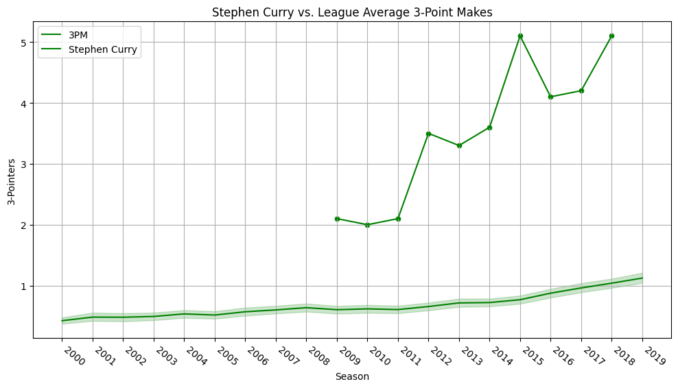
(Figure 3)
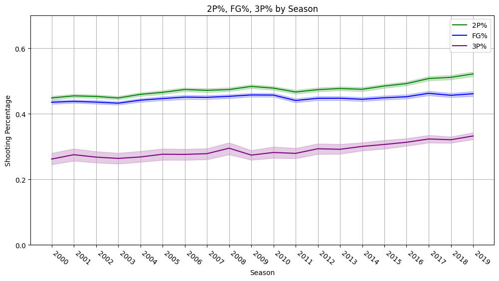
(Figure 4)
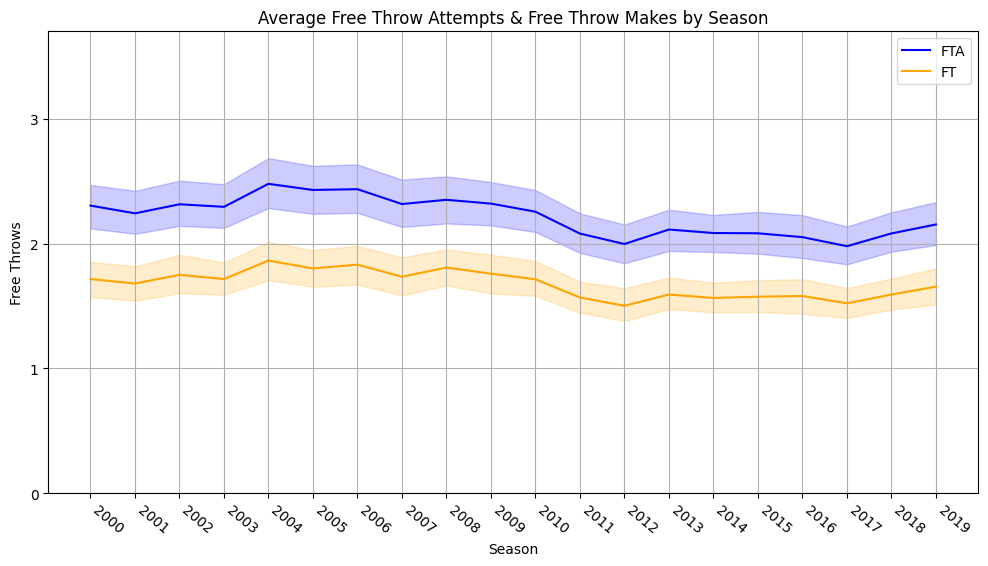
(Figure 5)
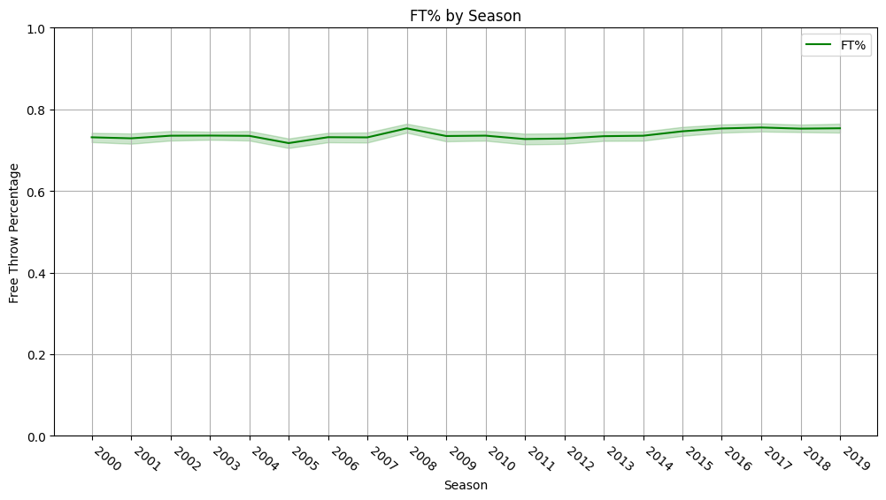
(Figure 6)
1.4.5 K-Means Cluster Analysis & Dimensionality Reduction
In the exploration of play styles, we conducted a cluster analysis to classify players based on personal performance. To aid in the subsequent analysis, we performed dimensionality reduction using Principal Component Analysis (PCA).
For Decade 1 (2000-2009), PC1 revealed substantial loading on offensive metrics (e.g., FG, PTS, 2P, FT), as outlined in Table 3. PC2 highlighted significant loading on rebounding, defensive metrics, and shooting percentages (e.g., ORB, TRB, BLK, FG%), as outlined in Table 4.
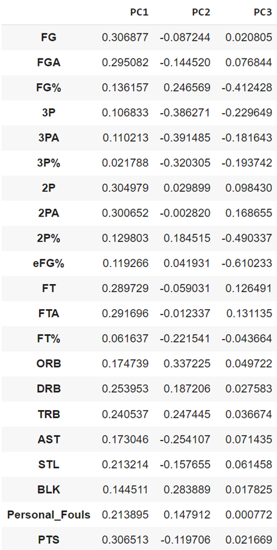
PCA Loadings - Decade 1, Table 3
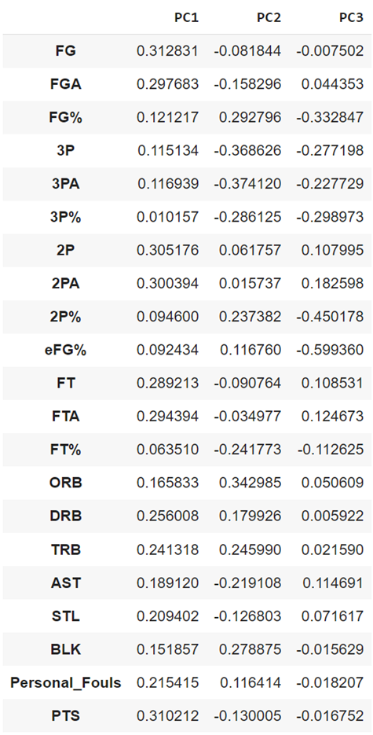
PCA Loadings - Decade 2, Table 4
In Decade 2 (2010-2019), Table 4 indicates that PC1 exhibits loading patterns akin to Decade 1, emphasizing offensive statistics. Similar to Decade 1, PC2 in Table 2 showcases loading on rebounding, defensive stats, and shooting percentages. The cumulative variance of the first three PCs, as presented in Table 5, reaches 77.50%, surpassing the threshold of 70%. The cumulative variance of the first three PCs, as shown in Table 6, reaches 75.91%, surpassing the 70% threshold. Therefore, we chose to use 3 PCs for both decades. These initial interpretations proved to be vital as we were able to use the first two PCs as the x-axis and y-axis for our K-Means scatterplot to plot all of Decade 1 and Decade 2 players along each PC.
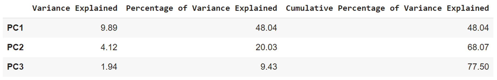
PC Variance - Decade 1, Table 5
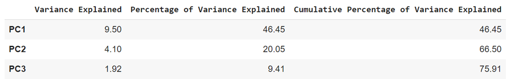
PC Variance - Decade 2, Table 6
We created an elbow plot and a silhouette plot for each decade to evaluate cluster validity. Decade 1 suggested 4 clusters, as detailed in Figure 7. On the other hand, Decade 2 exhibited some ambiguity (3 clusters by silhouette plot, 4 by elbow plot). Despite the discrepancy, the decision was made to opt for 4 clusters for both decades to make comparisons easier between the two decades.
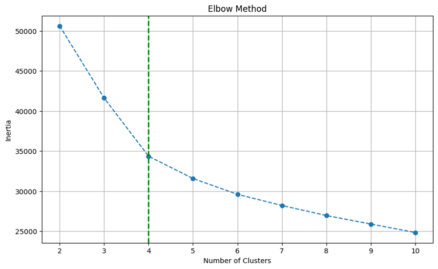
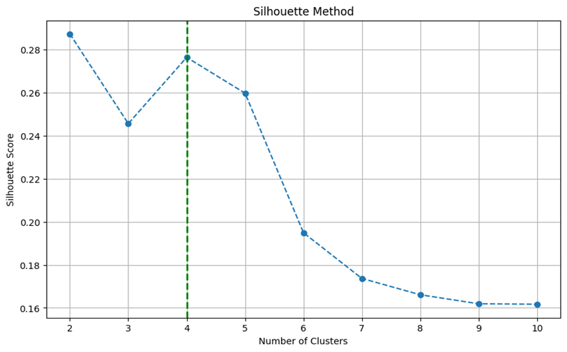
Elbow and Silhouette Plots - Decade 1, Figure 7
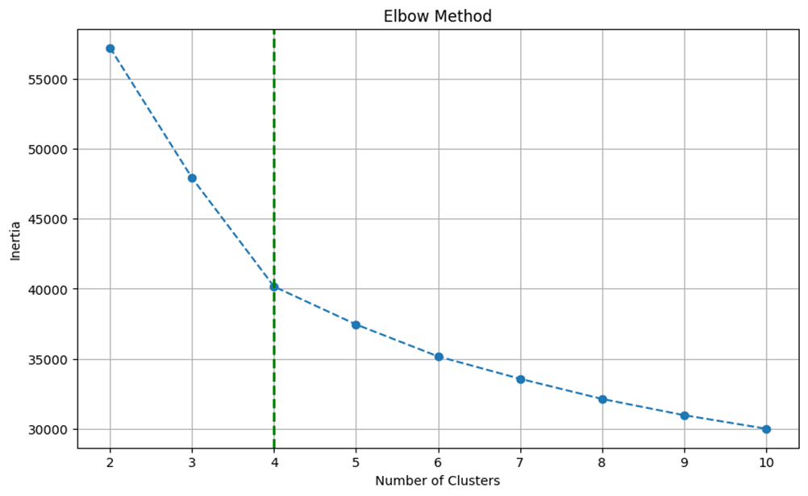
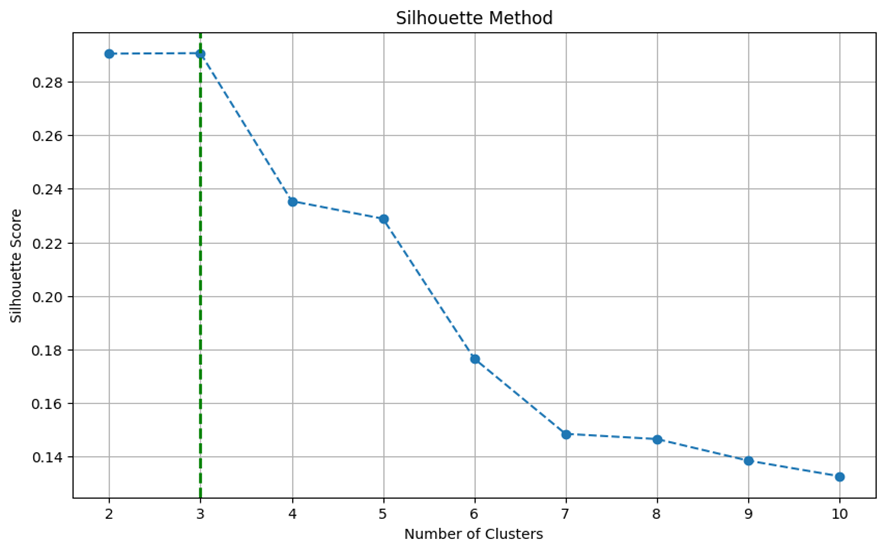
Elbow and Silhouette Plots - Decade 2, Figure 8
To visualize the 4 clusters per decade, scatter plots were generated, aligning with the PCA results. Each plot graphed 4 NBA player categories against 2 principal components. Generally, PC1 exhibited more loading on offensive statistics (FGA, 3PA, 2PA), while PC2 emphasized rebounding and defensive statistics (TRB, BLK, FG%). The details of these plots provide a good understanding of the play style clusters across the two decades.
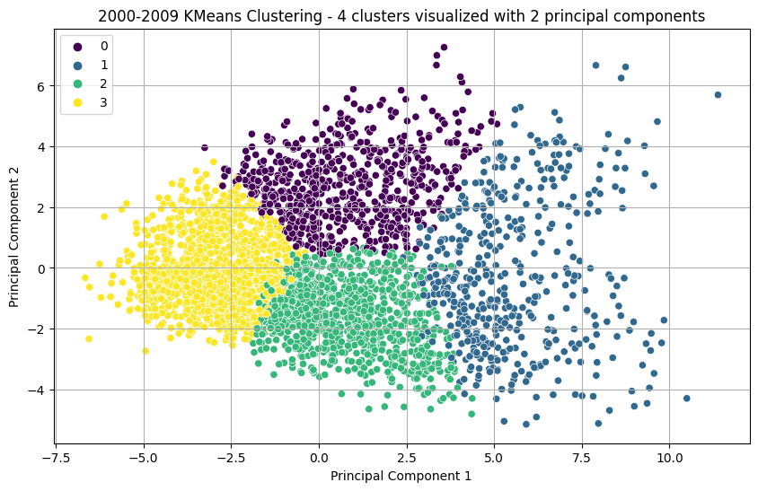
Cluster Scatter Plot - Decade 1, Figure 9
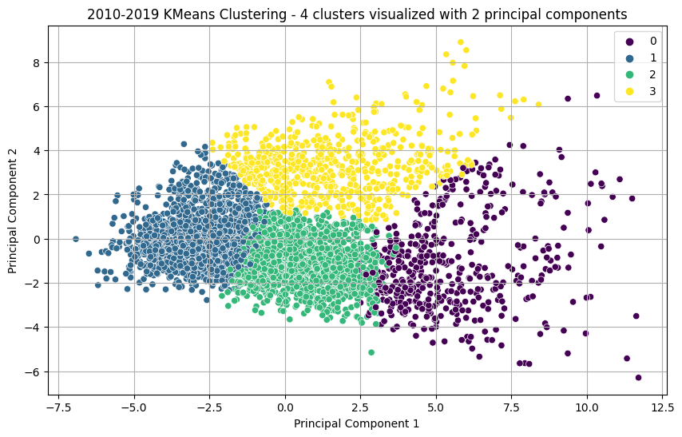
Cluster Scatter Plot - Decade 2, Figure 10
To derive meaningful interpretations for each cluster, we calculated the mean for each statistic within each cluster, as presented in Table 7 and Table 8. We then classified each cluster into a player mold, and identified key player examples from notable clusters.
Here are the interpretations for each cluster in Decade 1.

Cluster Averages Table - Decade 1, Table 7
The Bench Warmer (Cluster 0)
- Players in Cluster 0 provide moderate scoring (4.56 PTS) and lack defensive prowess, coming in last for STL and BLK.
The Best Player (Cluster 1)
- Players in this cluster will likely be the star, scoring 20+PTS and leading the clusters in AST, TRB, STL, and 2PA.
- Cluster Player Example: Kobe Bryant
Sharpshooter (Cluster 2)
- Players in this cluster contribute moderately in points, excel in 3-point shooting accuracy (1st in 3P%), and have decent AST and STL averages.
- Cluster Player Example: Steve Nash
Big Man (Cluster 3)
- Players in this cluster came in 1st for BLK, 1st in 2P%, and 2nd in TRB, but lacked heavily in 3-Point shooting accuracy (12.6%)
Here are the interpretations for each cluster in Decade 2.
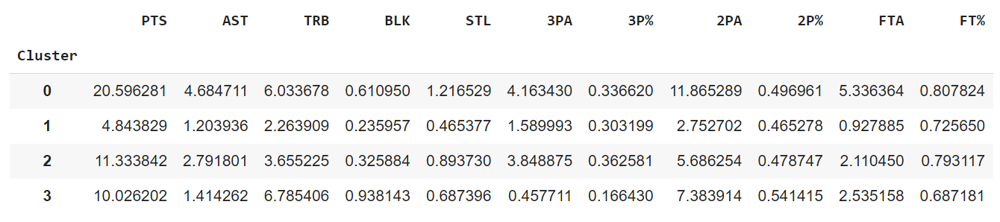
Cluster Averages Table - Decade 2, Table 8
The Best Player (Cluster 0)
- Players in Cluster 0 excel in scoring (20.6 PTS), with a balanced game having high averages for assists, rebounds, steals, and FT%
- Cluster Player Example: Kevin Durant
The Bench Warmer (Cluster 1)
- Players in this cluster demonstrate decent 3-point shooting but average last in PTS, AST, TRB, BLK, and STL.
Sharpshooter (Cluster 2)
- This cluster represents well-rounded players, scoring 11.33 points (2nd), 0.89 steals (2nd), 1st in 3P%,
- Cluster Player Example: Ray Allen
Big Man (Cluster 3)
- Players in Cluster 3 led averages for BLK, TRB, and 2P% and came 2nd for 2PA, FTA.
- Lacking in 3P and FT shooting accuracy (16.6%) and (68.7%)
In general, roles in the NBA have remained consistent across both Decade 1 and Decade 2, featuring distinct clusters like Lead Scorer, Big Man, and Sharpshooter. However, players are showcasing versatility beyond traditional positions. In Decade 2, the ‘Big Man’ cluster stands out with higher averages in assists, 3PA, and a 4% increase in 3P% compared to Decade 1. The ‘Sharpshooter’ cluster in Decade 2 exhibits higher total rebounds and blocks averages. Across all clusters, there’s a noticeable increase in average 3PA. These observations suggest a shift in traditional role responsibilities and skill sets.
1.5 Discussion
This section discusses key takeaways and observations from our analysis, focusing on the evolution of the NBA between 2000-2009 and 2010-2019. While our approach aligns with existing literature on player comparisons and positional evolution, our unique perspective examines the NBA holistically across all positions during these two decades.
However, our study has limitations, including not accounting for coaching styles, advancements in nutritional science affecting player conditioning, rule changes, and technological innovations like player analytics (Sorensen, 2019; Dutta, 2021).
A few notable findings emerge from our analysis:
General roles in the NBA, such as Lead Scorer, Big Man, and Sharp Shooter, have not changed.
Traditional positional distinctions have blurred, with players becoming more versatile across roles.
Players have gotten better. Their shot-making ability has significantly improved, as suggested by the 2P%, 3P%, and FG% increase over both decades.
The significance of 3-point shooting has grown, with all related 3-point statistics showing a notable increase across all positions.
The decline in personal fouls indicates a shift towards a less physical style of play.
The decline in Free Throw Attempts aligns with the reduction in personal fouls, highlighting the ever-changing scoring dynamics.
Our findings support a clear shift in NBA play style, prompting us to reject our null hypothesis. This shift suggests a future NBA with more multi-skilled players, challenging the focus on designated role responsibilities for each position.
1.6 References
Basketball Statistics & History of Every Team & NBA and WNBA Players. Basketball. (n.d.). https://www.basketball-reference.com/
Dutta, P. (2021, August 26). How data analytics is changing the sport of Basketball & the NBA. Medium. https://medium.com/@pratyushdutta29/how-data-analytics-is-changing-the-sport-of-basketball-the-nba-f85aa31e9ebb
Fenichel, A. (2022, July 15). The modernization of NBA offenses and why small ball is here to stay. The Analyst. https://theanalyst.com/na/2021/03/the-modernization-of-nba-offenses-and-why-small-ball-is-here-to-stay/
Fuller, E. (2022, July 20). How sports nutrition and biometrics are evolving NBA training. BasketballNews.com. https://www.basketballnews.com/stories/biometrics-and-boot-camp-inside-todays-world-nba-predraft-training-josh-green-zeke-nnaji-blake-wesley-joe-abunassar-isaac-mourier
Ganglani, N. (2023, February 20). “just because we don’t get into fights, they think we’re soft …” Basketball Network. https://www.basketballnetwork.net/latest-news/current-nba-players-slam-the-old-generation-for-thinking-todays-league-is-soft
Goldsberry, K. (2019, May 2). How mapping shots in the NBA changed it forever. FiveThirtyEight.com. https://fivethirtyeight.com/features/how-mapping-shots-in-the-nba-changed-it-forever/
Haefner, J. (n.d.). This unique defensive strategy and technique stops 3-point shooting dead in its tracks. breakthroughbasketball.com. https://www.breakthroughbasketball.com/defense/sneaky-23zone-tip.html
Kilcoyne, S. (2020, November). The Decline of the Mid-Range Jump Shot in Basketball: A Study of the Impact of Data Analytics on Shooting Habits in the NBA. Digital Commons Bryant University.https://digitalcommons.bryant.edu/cgi/viewcontent.cgi?article=1034&context=honors_mathematics
Martin, C. (2020, August 6). How important is versatility in the NBA?. sportsbet.io. https://sportsbet.io/sports/basketball/news/how-important-is-versatility-in-the-nba
Madabhushi, A., & Zhang, A. (2022, December 13). How effective is small ball?. Bruin Sports Analytics. https://www.bruinsportsanalytics.com/post/small-ball-analysis
Powell, S. (2022, September 22). Stephen Curry reached “his own level” and left behind a new-look NBA. NBA.com. https://www.nba.com/news/stephen-curry-changed-game-long-before-3-point-milestone
Sorensen, M. (2019, February 21). NBA rules have adapted over the years to make the game more fun for players, fans. Deseret News. https://www.deseret.com/2019/2/21/20666425/nba-rules-have-adapted-over-the-years-to-make-the-game-more-fun-for-players-fans
The NBA is soft. The Bona Venture. (2023, March 30). https://www.thebvnewspaper.com/2023/03/31/the-nba-is-soft/
Wang, D. (2022, December 13). How can we accurately compare NBA players across different eras?. Bruin Sports Analytics. https://www.bruinsportsanalytics.com/post/nba-era-comparisons